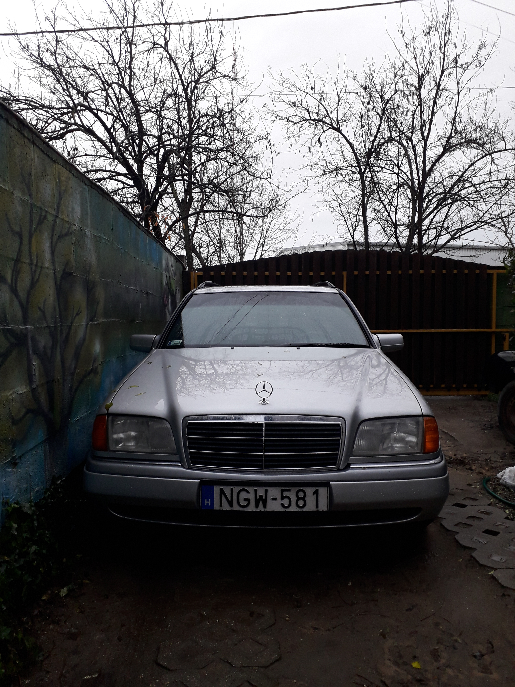

A Mercedes-Benz C-osztály W202-es generációja a kilencvenes évek egyik jellegzetes prémiumautója.
Műszaki adatok
Modell: Mercedes-Benz C250 Turbodiesel
Típus: W202
Évjárat: 1996
Motor: OM605, turbódízel
Váltó: kézi sebességváltó
Hajtás: hátsókerék-hajtás
Miért különleges?
A W202 a klasszikus Mercedesek világát képviseli.
